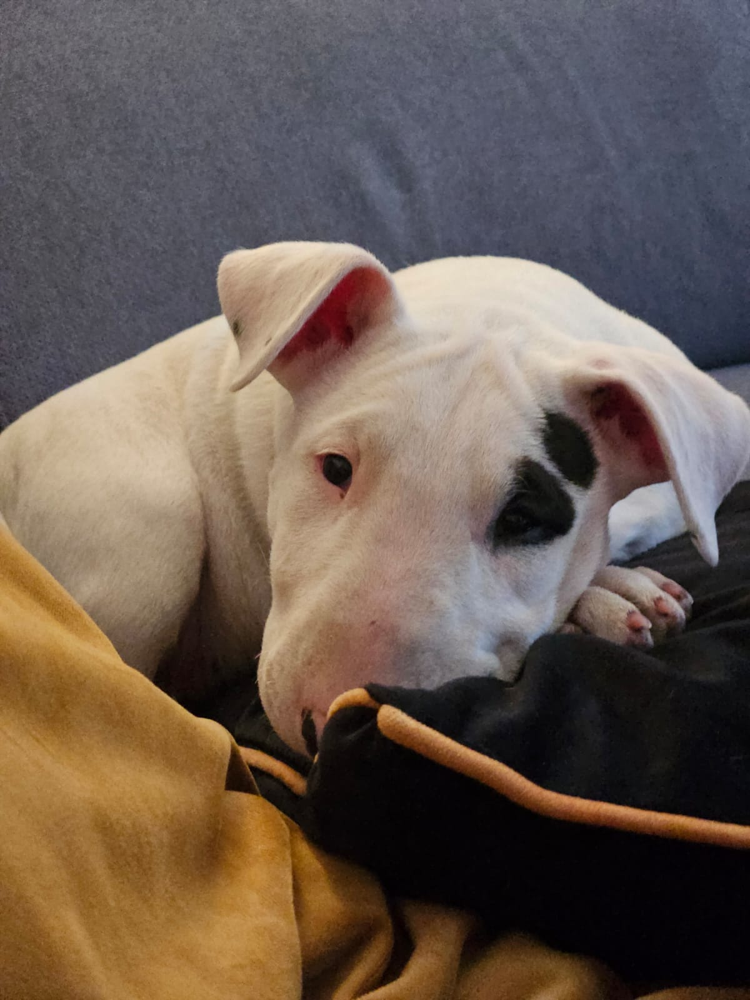
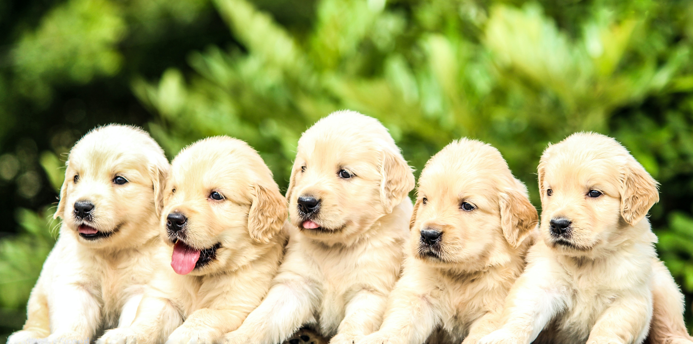

MANAGER HODOWLI
 nasza hodowla
nasza hodowla zwierzęta
zwierzęta artykuły
artykuły kontakt
kontakt
Kompleksowa opieka ciążowa dla suk
Oferujemy profesjonalną, popartą latami doświadczeń pomoc w prowadzeniu ciąży u suk - od wywoływania rui, przez cytologię (określenie optymalnego czasu na zapłodnienie a nawet potencjalny wpływ na płeć i liczbę szczeniąt w miocie), po inseminację , poród, laktację


A przede wszystkim w trosce o zdrowie szczeniąt i matki, prowadzimy doradztwo dietetyczne i suplementacji, dobrane do każdej rasy i do każdego osobnika indywidualnie.
